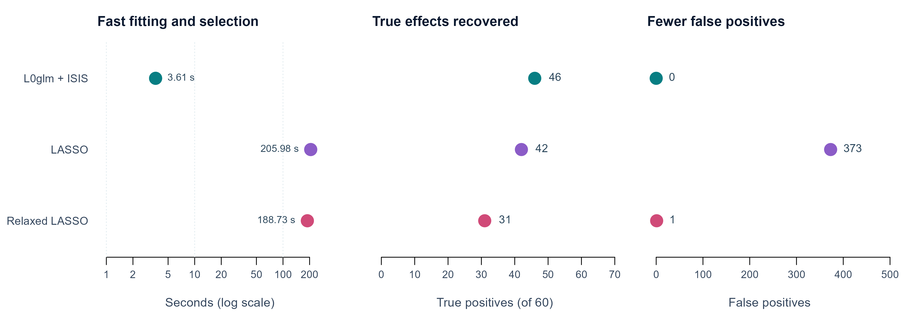

Speed, support recovery and reproducible benchmarks
Source:vignettes/articles/performance.Rmd
performance.RmdL0glm’s shrinking active set, compiled solvers and fast GIC preset can deliver striking gains in both speed and support recovery. These examples compare complete fitting and selection workflows. Each table identifies the tuning rule, and reports support recovery separately from elapsed time. The deconvolution examples use the website benchmark. The million-predictor comparison reproduces the LASSO workflows. The README and this page share the same published measurements.
One million predictor example
The design has 500 observations, one million standard-normal predictors and 60 nonzero coefficients of either sign. L0glm uses GIC-preset ISIS plus a relaxed refit. LASSO and fully relaxed LASSO are tuned by BIC or five-fold CV on the unscreened design. The screening tutorial compares complete models when all methods use SIS or ISIS.
| Method | Selection | Seconds | GIC | TP | FP | FN | TN | F1 | MCC |
|---|---|---|---|---|---|---|---|---|---|
| L0glm + ISIS | GIC preset | 6.52 | 2579 | 40 | 2 | 20 | 999938 | 0.784 | 0.797 |
| LASSO | BIC path | 23.42 | 14789 | 23 | 612 | 37 | 999328 | 0.066 | 0.118 |
| Relaxed LASSO | BIC path | 22.47 | 10588 | 21 | 453 | 39 | 999487 | 0.079 | 0.124 |
| LASSO | 5-fold CV | 120.69 | 4309 | 17 | 50 | 43 | 999890 | 0.268 | 0.268 |
| Relaxed LASSO | 5-fold CV | 99.24 | 7413 | 20 | 252 | 40 | 999688 | 0.120 | 0.156 |

Fast fitting and selection, higher sensitivity and fewer false positives in the million-predictor example. L0glm uses a GIC preset; both LASSO methods use five-fold CV. There are 60 true effects.
In this simulation L0glm is 19 times faster than five-fold-CV LASSO and recovers more true effects with fewer false positives. The L0glm timing includes screening and one preset fit; the other methods evaluate up to 40 native path values, with paths refitted in each CV training fold. BIC is shown alongside CV because GIC can select a null LASSO model at this dimension. All rows retain GIC as a common evaluation score. Five-fold comparisons use the same random folds.
Simulation is excluded from timings. The documented run uses one BLAS
thread and eight screening threads; the design is held in memory. The
L0glm time is the median of three runs. The common-scoring CV
implementation used for the LASSO rows evaluates folds serially.
Standalone benchmarks that call cv.glmnet() use parallel
folds through cv_glmnet_parallel(). See the million-predictor tutorial for the
complete data setup.
Simulations from the abess documentation
The abess power tutorial uses Gaussian and logistic regression with 1,000 predictors and ten true effects. We use its generator for both families. The low-correlation design is AR(1) with parameter 0.1. The high-correlation design has pairwise correlation 0.7. Each family and correlation setting uses ten independent simulations and a fresh test set of the same size as the training set. There are 500 observations per Gaussian dataset and 1,000 per logistic dataset.
L0glm uses the GIC preset, a relaxed refit and the default automatic
local support refinement. The other methods select from their fitted
paths using the common GIC in sparseGLM(). ABESS searches
support sizes 0 to 60. The other paths use up to 40 values. These are
GIC comparisons on the abess simulation designs. The abess tutorial uses
a different tuning protocol. Test RMSE or AUC, sensitivity,
false-positive rate and MCC are means over the ten replications. Seconds
are median elapsed fitting and selection time with one BLAS thread. Reproduction
script · Per-run
data
Gaussian regression
| Correlation | Method | Test RMSE | Sensitivity | FPR | MCC | Seconds |
|---|---|---|---|---|---|---|
| 0.1 | L0glm | 1.019 | 100% | 0.08% | 0.964 | 0.26 |
| 0.1 | ABESS | 1.019 | 100% | 0.08% | 0.964 | 0.51 |
| 0.1 | L0Learn | 1.019 | 100% | 0.08% | 0.964 | 0.22 |
| 0.1 | LASSO | 2.766 | 100% | 0.00% | 1.000 | 0.25 |
| 0.1 | Relaxed LASSO | 1.010 | 100% | 0.00% | 1.000 | 0.27 |
| 0.1 | Adaptive LASSO | 10.590 | 87% | 0.00% | 0.932 | 0.29 |
| 0.1 | Adaptive relaxed LASSO | 7.108 | 87% | 0.00% | 0.932 | 0.30 |
| 0.1 | MCP | 1.459 | 95% | 0.00% | 0.974 | 0.25 |
| 0.1 | SCAD | 3.203 | 95% | 0.00% | 0.974 | 0.25 |
| 0.7 | L0glm | 1.020 | 100% | 0.04% | 0.982 | 0.23 |
| 0.7 | ABESS | 1.017 | 100% | 0.03% | 0.986 | 0.50 |
| 0.7 | L0Learn | 1.018 | 100% | 0.02% | 0.991 | 0.11 |
| 0.7 | LASSO | 3.885 | 100% | 0.98% | 0.738 | 0.26 |
| 0.7 | Relaxed LASSO | 1.186 | 99% | 0.09% | 0.961 | 0.28 |
| 0.7 | Adaptive LASSO | 17.517 | 81% | 0.00% | 0.898 | 0.29 |
| 0.7 | Adaptive relaxed LASSO | 9.168 | 81% | 0.00% | 0.898 | 0.30 |
| 0.7 | MCP | 31.728 | 56% | 0.00% | 0.745 | 0.24 |
| 0.7 | SCAD | 39.230 | 61% | 0.00% | 0.776 | 0.27 |
Logistic regression
| Correlation | Method | Test AUC | Sensitivity | FPR | MCC | Seconds |
|---|---|---|---|---|---|---|
| 0.1 | L0glm | 0.991 | 100% | 0.06% | 0.973 | 0.61 |
| 0.1 | ABESS | 0.991 | 100% | 0.06% | 0.973 | 2.50 |
| 0.1 | L0Learn | 0.991 | 100% | 0.06% | 0.973 | 5.94 |
| 0.1 | LASSO | 0.987 | 100% | 0.23% | 0.907 | 0.62 |
| 0.1 | Relaxed LASSO | 0.991 | 100% | 0.03% | 0.986 | 2.05 |
| 0.1 | Adaptive LASSO | 0.990 | 99% | 0.08% | 0.958 | 0.57 |
| 0.1 | Adaptive relaxed LASSO | 0.991 | 99% | 0.00% | 0.995 | 1.72 |
| 0.1 | MCP | 0.991 | 100% | 0.00% | 1.000 | 0.70 |
| 0.1 | SCAD | 0.990 | 100% | 0.07% | 0.969 | 0.40 |
| 0.7 | L0glm | 0.995 | 82% | 0.09% | 0.862 | 1.07 |
| 0.7 | ABESS | 0.996 | 84% | 0.37% | 0.775 | 2.04 |
| 0.7 | L0Learn | 0.997 | 80% | 0.09% | 0.849 | 1.28 |
| 0.7 | LASSO | 0.996 | 89% | 3.84% | 0.404 | 0.57 |
| 0.7 | Relaxed LASSO | 0.991 | 47% | 0.36% | 0.519 | 4.47 |
| 0.7 | Adaptive LASSO | 0.990 | 50% | 1.55% | 0.347 | 0.56 |
| 0.7 | Adaptive relaxed LASSO | 0.987 | 35% | 0.76% | 0.327 | 2.38 |
| 0.7 | MCP | 0.993 | 60% | 0.05% | 0.747 | 46.88 |
| 0.7 | SCAD | 0.996 | 88% | 3.49% | 0.416 | 1.63 |
L0glm recovers all ten Gaussian effects on average, with test RMSE close to the noise standard deviation of one, in about a quarter of a second. L0Learn is faster on these Gaussian designs, while L0glm takes about half the time of ABESS. In the strongly correlated logistic design, L0glm recovers 82% of the true effects with a 0.09% false-positive rate and MCC 0.862, taking 1.07 s. ABESS recovers 84% with a 0.37% false-positive rate and MCC 0.775, taking 2.04 s. L0Learn gives the highest test AUC there. Support recovery and prediction measure different aspects of these fitted models.
Single channel deconvolution
A realistic blurred Poisson spike train has 10,000 observations, 10,000 predictors and 1,000 true peaks. Every fit is evaluated using the original Poisson likelihood and a common GIC.
| Method | Selection | Seconds | GIC | TP | FP | FN | TN | F1 | MCC |
|---|---|---|---|---|---|---|---|---|---|
| L0glm | GIC preset | 0.14 | 102682 | 845 | 154 | 155 | 8846 | 0.845 | 0.828 |
| LASSO | GIC path | 0.24 | 145904 | 950 | 2096 | 50 | 6904 | 0.470 | 0.467 |
| Relaxed LASSO | GIC path | 0.42 | 122083 | 905 | 999 | 95 | 8001 | 0.623 | 0.607 |
| LASSO | 5-fold CV | 2.72 | 146234 | 951 | 2146 | 49 | 6854 | 0.464 | 0.462 |
| Relaxed LASSO | 5-fold CV | 2.77 | 133122 | 920 | 1523 | 80 | 7477 | 0.534 | 0.524 |
L0glm uses one GIC preset with a relaxed refit. LASSO and relaxed
LASSO search ten explicit lambda values using GIC or five-fold CV, with
a weighted-Gaussian approximation and observation weights
1/(y+0.1). CV selects glmnet’s minimum weighted prediction
error using four parallel workers. ABESS is omitted from this large
example. The deconvolution tutorial
shows mirrored signals and true-versus-estimated coefficient plots.
Multichannel deconvolution
The GC/MS-style simulation also has 10,000 rows, 10,000 candidate peak locations and 1,000 true peaks, with all 226 informative mass channels retained. Shared chromatographic peak times correspond to active coefficient rows; within-row coefficients describe the mass spectra.
| Method | Selection | Seconds | GIC | TP | FP | FN | TN | F1 | MCC | Within-row F1 | Within-row MCC |
|---|---|---|---|---|---|---|---|---|---|---|---|
| L0glm | GIC preset | 8.03 | 5606331 | 944 | 11 | 56 | 8989 | 0.966 | 0.962 | 0.912 | 0.869 |
| Group LASSO | GIC path | 201.03 | 7413616 | 980 | 860 | 20 | 8140 | 0.690 | 0.685 | 0.842 | 0.768 |
| Relaxed group LASSO | GIC path | 804.89 | 6138687 | 909 | 309 | 91 | 8691 | 0.820 | 0.802 | 0.853 | 0.782 |
| Group LASSO | 5-fold CV | 593.23 | 9639345 | 998 | 4242 | 2 | 4758 | 0.320 | 0.316 | 0.886 | 0.830 |
| Relaxed group LASSO | 5-fold CV | 2460.38 | 6198648 | 962 | 502 | 38 | 8498 | 0.781 | 0.769 | 0.856 | 0.785 |
Row F1 and MCC measure peak recovery. Within-row F1 and MCC assess
spectral sparsity among correctly recovered true-positive peaks. L0glm
uses the full Poisson likelihood with channel-specific working weights.
Grouped glmnet uses shared row weights 1/(rowMeans(y)+0.1)
for its labelled Gaussian approximation. GIC selection scores ten lambda
values using the original Poisson likelihood; five-fold CV selects the
minimum weighted prediction error on the same lambda grid. Fully relaxed
fits use gamma=0. L0glm uses lambda="gic" and
four outcome-fitting threads; CV uses four parallel workers. Timings
include the complete fitting and selection workflow, including worker
startup for CV. The preset time is the median of three runs with
matching coefficients. Simulation and final metric reporting are
excluded.
The deconvolution tutorial stacks observed data, ground truth and fitted coefficient heatmaps, and shows all-channel coefficient comparisons in a single column.
Local support refinement
local.search refines a completed adaptive-ridge fit by
testing predictor additions, deletions and small exchanges. Its
parameter-count objective uses the same conventions as
GIC() and the tuning functions. The default
"auto" applies the search to initial supports with at most
50 coefficient dimensions, after any SIS/ISIS screening. The reference gives the
computational-size rule, controls and returned diagnostics.
fit <- l0glmFit(X, y, family=binomial(), lambda="gic",
local.search="auto")
fit$local.search$historyThe paired comparison below uses the same 40 datasets as the
abess-design benchmark: ten replications for each family and
correlation. GIC, TP, FP and MCC are means; timings are medians. Both
variants use the same GIC preset and relaxed fitting option. Elapsed
time here measures l0glmFit() itself; the nine-method
comparison includes the common sparseGLM() scoring
workflow. Model selection uses only the training data.
| Family | Correlation | Local search | GIC | TP | FP | MCC | Seconds |
|---|---|---|---|---|---|---|---|
| Gaussian | 0.1 | FALSE | 1799.1 | 9.5 | 0.0 | 0.974 | 0.05 |
| Gaussian | 0.1 | auto | 1563.5 | 10.0 | 0.8 | 0.964 | 0.19 |
| Gaussian | 0.7 | FALSE | 1767.5 | 9.5 | 0.0 | 0.974 | 0.05 |
| Gaussian | 0.7 | auto | 1563.1 | 10.0 | 0.4 | 0.982 | 0.18 |
| Logistic | 0.1 | FALSE | 362.7 | 9.8 | 0.0 | 0.990 | 0.12 |
| Logistic | 0.1 | auto | 357.4 | 10.0 | 0.6 | 0.973 | 0.51 |
| Logistic | 0.7 | FALSE | 320.3 | 3.7 | 2.1 | 0.482 | 0.17 |
| Logistic | 0.7 | auto | 222.0 | 8.2 | 0.9 | 0.862 | 0.96 |
The refinement substantially improves Gaussian prediction and recovery of correlated logistic effects. In the Gaussian examples, mean test RMSE falls from 1.46–1.48 to 1.02. For correlated logistic predictors, mean MCC rises from 0.482 to 0.862. The extra work is concentrated on small models: additions, deletions and exchanges are accepted only when they improve the chosen training criterion.
Reproduction script · Per-run comparisons
Large multichannel deconvolution models exceed this automatic size
limit. Their initial coefficients are retained. TRUE
explicitly requests refinement for larger supports, and
FALSE disables it.
For example, a 10,000-predictor, 228-channel Poisson control fit took
5.73 s with "auto" and 5.85 s with FALSE, with
identical coefficients. Explicitly requesting three search rounds
improved GIC from 5,525,411 to 5,494,470 and within-row MCC from 0.870
to 0.878, taking 34.36 s. The default size limit preserves the fast
fitting path for models of this size. Run
benchmark_local_deconvolution() from the reproduction
script to repeat these deconvolution
controls.
Native validation and OpenMP
Both drivers can select an IRLS checkpoint by held-out deviance. The
specialized l0nnPois backend evaluates validation in native
code and fits channels in parallel. This example uses 1,000 predictors,
16 channels, 60 active rows and an independent Poisson replicate for
validation. Timings are medians of five fits with one BLAS thread.
| Backend | Outcome threads | Seconds | Validation deviance | GIC | F1 | MCC |
|---|---|---|---|---|---|---|
| General driver | 1 | 1.19 | 0.357611 | 42687.99 | 0.945 | 0.943 |
| l0nnPois | 1 | 0.10 | 0.357611 | 42687.99 | 0.945 | 0.943 |
| l0nnPois | 2 | 0.07 | 0.357611 | 42687.99 | 0.945 | 0.943 |
| l0nnPois | 4 | 0.05 | 0.357611 | 42687.99 | 0.945 | 0.943 |
| l0nnPois | 8 | 0.05 | 0.357611 | 42687.99 | 0.945 | 0.943 |
The fits agree across drivers and thread counts. Run benchmark_native_validation.R to reproduce the comparison.
Reproduce and extend
- Website benchmark source: preset fits, comparisons and plots.
- Million-predictor LASSO benchmark: BIC and five-fold CV comparisons.
- Gaussian/logistic benchmark: matched comparisons with ABESS, L0Learn, LASSO variants, MCP and SCAD.
- Local support refinement: paired comparisons with refinement enabled or disabled.
- Solver/problem-size benchmark: solvers, families, matrix storage and sizes.
- Single/multichannel benchmark: detailed signal examples and alternative methods.
-
sparseGLM(): use the same comparison framework on your own data.
The benchmarks were run on an HP ZBook Fury 17.3-inch G8 Mobile Workstation with an 11th-generation Intel Core i9-11950H at 2.60 GHz, 8 physical cores and 16 logical cores, running Windows and R 4.5.0 with OpenBLAS. BLAS uses one thread. Screening in the million-predictor example uses eight physical cores. Multichannel deconvolution uses four outcome-fitting threads, and deconvolution CV uses four parallel workers. Single-channel fits use one fitting thread. Timings will vary with hardware and tuning choices. F1 and MCC evaluate the known simulated support; it is never used to select models. Likelihood floors and approximation labels are explicit in the benchmark source.